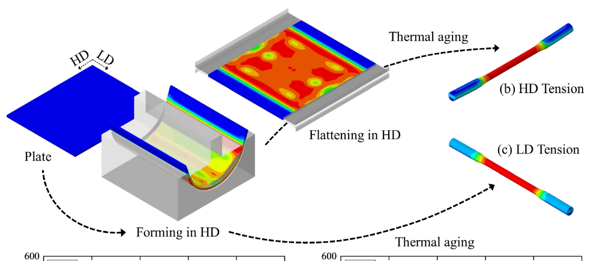
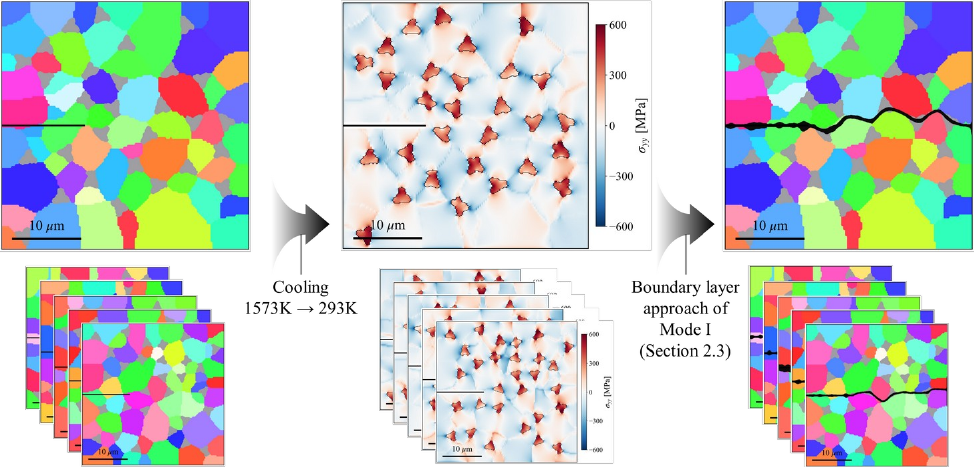

Seungwoo Kim 김승우
Specializes in finite element modeling for nonlinear solid mechanics, with a focus on anisotropic plasticity and fracture of metals and ceramics. Develops constitutive models, implements them as ABAQUS user subroutines, and combines simulation with machine learning for industrial process optimization.

Research
AI-driven process simulation based on a thermo-mechanical anisotropic hardening model
A dislocation-based distortional hardening model predicts the yield strength of API X52 linepipe steel after forming, flattening and thermal aging within a mean error of 3.4%.

Standardized plasticity–fracture evaluation of cylindrical lithium-ion battery cans
Location-dependent plasticity and ductile fracture models reproduce the measured force–displacement response and fracture location of thin-walled 21700 battery casings.

Multiscale modeling of cryogenic toughening in AlN ceramics
A polycrystalline phase-field fracture model shows that thermal residual stress explains only 6.6% of the toughness increase of AlN from 293 K to 77 K.
